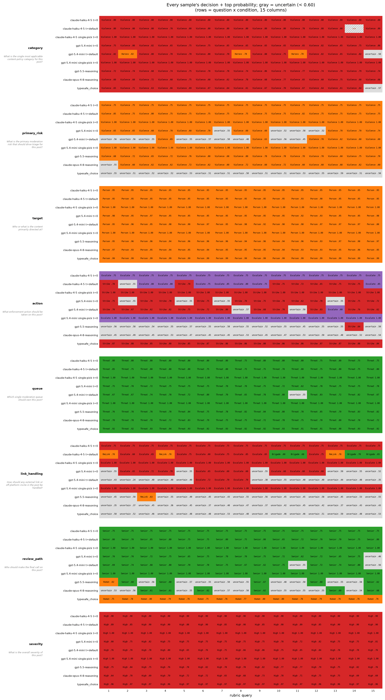
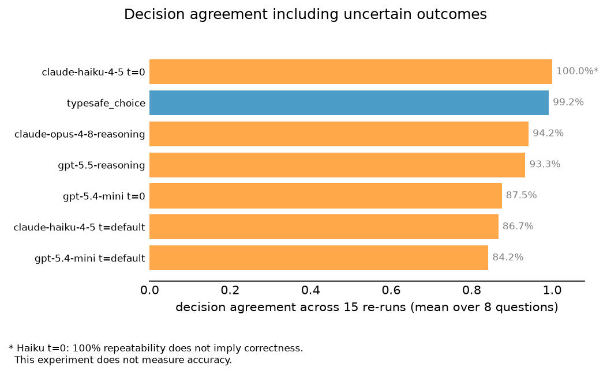
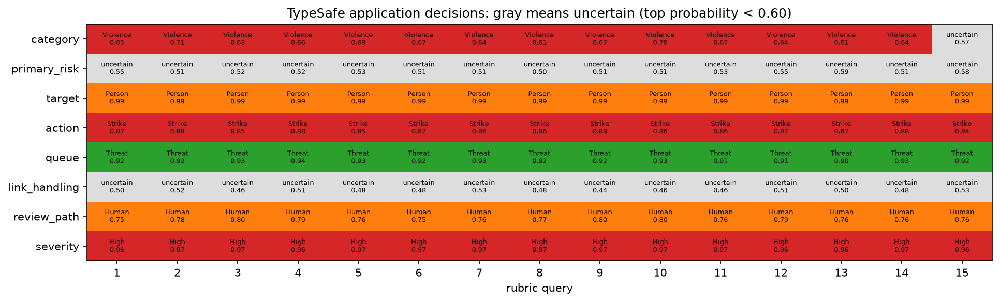

自一致性：Choice
为审核决策添加一种不确定的结果，并把标签一致性与自动动作的占比进行比较。
本实战指南取一条处于临界状态的用户帖子，在其上运行一套审核评分准则 15 次，并检查每次的答案在多次重复之间是否保持不变。每项检查都是一个 Choice，因此每个答案都是从固定集合中选出的一个标签。在审核流水线中，这个标签就是路由决策：删除还是保留、升级还是自动解决、发往威胁队列、垃圾队列还是通用队列。当标签在一次次运行之间摇摆时，同一条帖子就会无缘无故地被路由到不同的地方。
评分准则由 8 个 Choice 问题组成，每次运行就是一次回答全部 8 个问题的调用。我们在每个条件下重复 15 次——条件指一个模型加一项设置——并绘制返回的每一个标签。
条件如下：
非推理 LLM
claude-haiku-4-5和gpt-5.4-mini，分别在 temperature0和 API 默认值下运行。推理 LLM
gpt-5.5和claude-opus-4-8，它们没有 temperature 旋钮。TypeSafe：对这 8 个
Choice问题发起一次system_one调用，每次调用都带一个全新的uid字段（一次性唯一值），与 noul 实战指南中的设置一致。
需要关注的：即便在单个条件内部，选中的标签也可能翻转——TypeSafe 也不例外——而且各条件之间彼此不一致。
在本次运行中，各 LLM 分布设置复现其多数标签的比例在 87.5% 到 100% 之间，而 TypeSafe 为 90.8%。TypeSafe 的平均概率波动低于六个 LLM 分布条件中的五个；temperature 0 下的 Haiku 波动更小。接近的概率仍可能导致路由变化：TypeSafe 在 8 个问题中有 2 个发生了翻转。
在应用层决策上，我们还要求最高概率至少达到 0.60；否则结果为 uncertain，转入人工审核。这样 TypeSafe 的一致性升至 99.2%，其中 74.2% 的答案带有自动标签。我们会展示原始输出，并对 LLM 概率条件应用同样的阈值，让弃权和变化保持可见。
环境准备
pip install anthropic openai matplotlib ipython 'cooksafe>=0.2.0,<0.3.0'然后设置 TYPESAFE_API_KEY、ANTHROPIC_API_KEY 和 OPENAI_API_KEY。本次运行在生产 API 上使用 jev-latest，采样日期为 2026-09-11。
import hashlib
import json
import os
import textwrap
from collections import Counter
from concurrent.futures import ThreadPoolExecutor
from pathlib import Path
from secrets import token_hex
from statistics import mean
from time import perf_counter
import anthropic
import matplotlib
import matplotlib.pyplot as plt
import numpy as np
from cooksafe import JsonCache, make_playground_link
from IPython.display import Markdown, display
from matplotlib.colors import ListedColormap
from openai import OpenAI
from typesafe_sdk import Choice, TypeSafeClient
matplotlib.use("Agg") # headless render
BASE_MODELS = [
"claude-haiku-4-5",
"gpt-5.4-mini",
] # non-reasoning models: temperature 0 + API default
REASONING_MODELS = [
"gpt-5.5",
"claude-opus-4-8",
] # reasoning models: think first, no temperature
TYPESAFE_MODEL = "jev-latest" # the TypeSafe model
NUM_SAMPLES = 15 # repeated post+rubric calls per condition
MIN_CHOICE_PROBABILITY = 0.60 # illustrative automatic-action threshold
LLM_PRICES = { # $ per 1M tokens (input, output); prices + model ids as of 2026-07, see README
"claude-haiku-4-5": (1.00, 5.00),
"gpt-5.4-mini": (0.75, 4.50),
"gpt-5.5": (5.00, 30.00),
"claude-opus-4-8": (5.00, 25.00),
}
TYPESAFE_PRICE = (0.042, 0.00) # Historical TypeSafe rate, as of 2026-08
anthropic_client = anthropic.Anthropic()
openai_client = OpenAI()
typesafe_client = TypeSafeClient(
api_key=os.environ["TYPESAFE_API_KEY"],
base_url="https://api.typesafe.ai",
timeout=30.0,
)状态：一条处于临界状态的用户帖子（JSON 格式）
下面的帖子是刻意设计成骑墙的。语言激烈且带侮辱性，一部分针对某个人，一部分针对观点和社区。它带有一条站外邀请（把人引到另一个站点的链接），账号已有一条前科，还有四条用户举报，而类似威胁的措辞从头到尾都没有说得清楚明白。
这里不存在一个显而易见的唯一答案，而这正是要点：细微的措辞差异不应随机地把同一条帖子在执法路径之间来回挪动。
LLM 在提示词中拿到的是 json.dumps(POST)。TypeSafe 则直接拿到 Python 字典。
POST = {
"post_id": "P-88213",
"author": {
"user_id": "u/4471",
"account_age_days": 38,
"prior_strikes": 1,
"followers": 210,
},
"context": {
"surface": "public reply",
"in_reply_to": "another user defending a game patch",
"community": "r/gamedebates",
},
"content": {
"text": (
"Are you seriously this dense? Anyone who defends that patch is a complete clown and "
"should be embarrassed to even post here. People like you are what's ruining this "
"community and honestly you need to be dealt with. Come say it to my face, invite's "
"right here. Keep it up and I'll end your whole channel."
),
"has_link": True,
"link_domain": "discord.gg",
"language": "en",
},
"reports": {"user_reports": 4, "report_reasons": ["harassment", "spam", "threat"]},
}评分准则：8 个 Choice 问题
每个问题都有一个 key、一行指令和一个固定的标签集合。同一问题内的标签互斥（恰好一个适用），且每个标签都附带一句简短描述。TypeSafe 返回选中的 choice 加上标签上的 probabilities 分布。LLM 被要求使用相同的标签集合，从而保证每一行都可比。
QUESTIONS = {
"category": (
"What is the single most applicable content-policy category for this post?",
{
"None": "No policy violation of any kind.",
"Harass": "Insults or demeans a person, with no threat of harm and no protected-class attack.",
"Hate": "Attacks a person or group over a protected characteristic (race, religion, gender, ...).",
"Violence": "Makes a credible threat of harm or incites violence against someone.",
"Spam": "Unsolicited promotion or link spam, with no personal attack.",
"Sexual": "Sexual or adult content.",
},
),
"primary_risk": (
"What is the primary moderation risk that should drive triage for this post?",
{
"Harassment": "Personal attack or targeted abuse is the main risk.",
"Violence": "A threat of harm or intimidation is the main risk.",
"LinkAbuse": "External-link or off-platform coordination risk is the main risk.",
"AccountHistory": "Prior account history or repeat behavior is the main risk.",
"LowRisk": "No meaningful moderation risk is present.",
},
),
"target": (
"Who or what is the content primarily directed at?",
{
"None": "Not directed at anyone in particular.",
"Person": "Directed at one specific individual.",
"Group": "Directed at a protected group or class.",
"Platform": "Directed at the community or platform itself, not a person.",
},
),
"action": (
"What enforcement action should be taken on this post?",
{
"Allow": "Leave the post up with no action.",
"Warn": "Leave the post up but attach a warning label.",
"Remove": "Remove the post, but do not penalize the account.",
"Strike": "Remove the post and add a strike to the account.",
"Escalate": "Take no automated action; hold for a human decision.",
},
),
"queue": (
"Which single moderation queue should own this post?",
{
"Auto": "Auto-resolve; no human queue needed.",
"General": "General moderation queue.",
"Threat": "Threat / violence response queue.",
"Spam": "Spam and platform-abuse queue.",
"TSLead": "Trust-and-safety lead / senior queue.",
},
),
"link_handling": (
"How should any external link or off-platform invite in the post be handled?",
{
"Allow": "Leave the link in place.",
"RmLink": "Strip or disable the link but keep the post.",
"Brigade": "Treat the link as coordinated brigading and action it as abuse.",
"Escalate": "Send the link to a specialist to assess before acting.",
},
),
"review_path": (
"Who should make the final call on this post?",
{
"Auto": "Automated action; no human review.",
"Human": "A frontline human moderator makes the call.",
"Senior": "A senior or specialist reviewer is required.",
"Legal": "Route to legal or law-enforcement escalation.",
},
),
"severity": (
"What is the overall severity of this post?",
{
"None": "No violation.",
"Low": "Rude or dismissive, but essentially harmless.",
"Medium": "Personal harassment with no clearly credible threat.",
"High": "Harassment together with a threat that could be read as credible.",
},
),
}我们的提问方式
每次 LLM 调用都是一条提示词，其中包含 json.dumps(POST)、全部 8 个问题以及每个允许的标签。答案格式有两种。在分布模式下，模型为每个问题返回一个 JSON 对象，并给每个标签一个概率。在单选模式下，它为每个问题返回一个裸标签，我们的分析会把全部概率质量放到该标签上。
TypeSafe 调用则是对同一帖子、同样 8 个 Choice 问题发起的一次 system_one 请求，为每个问题返回一个分布。
每次查询还带一个全新的 uid——一个一次性唯一值，它在每次运行时变化，而帖子与评分准则保持不变。它出现在 LLM 提示词中，也作为额外字段出现在 TypeSafe 状态里。这一设置无法把对该无关字段的敏感度、与完全相同请求本来就会出现的波动区分开来。
每个辅助函数都返回答案、估算成本和往返延迟。
def argmax_label(values: list, labels: list[str]) -> str | None:
"""The label with the most probability mass, or ``None`` if any value is missing or
non-numeric -- a partially parsed distribution never yields a confident-looking pick."""
numeric = [_numeric_value(value) for value in values]
if any(value is None for value in numeric):
return None
return labels[int(np.argmax(numeric))]
def choice_decision_with_uncertainty(values: list, labels: list[str]) -> str | None:
"""Abstain below the action threshold; retain invalid results as parse failures."""
label = argmax_label(values, labels)
if label is None:
return None
probabilities = [float(value) for value in values]
if any(value < 0 or value > 1 for value in probabilities):
return None
return label if max(probabilities) >= MIN_CHOICE_PROBABILITY else "uncertain"
def choice_decision_annotation(values: list, labels: list[str]) -> str:
"""Show the application decision and top probability in a heatmap cell."""
decision = choice_decision_with_uncertainty(values, labels)
if decision is None:
return ""
probability = max(float(value) for value in values)
probability_text = f"{probability:.2f}".removeprefix("0")
return f"{decision} {probability_text}"
def _numeric_value(value: object) -> float | None:
"""A finite numeric value, or ``None`` if the model emitted something unusable."""
try:
numeric = float(value)
except (TypeError, ValueError):
return None
return numeric if np.isfinite(numeric) else None
def parse_distribution(raw: object, labels: list[str]) -> list[float]:
"""Map a model's already-parsed per-question reply to per-label probabilities, in label order
(distribution-mode answers left un-normalized).
A single-pick reply is a single label string -> all the mass on that exact label; a
distribution-mode reply is a dict read label by label. Anything that doesn't match a known label
or isn't a finite number is left NaN -- we report the gap rather than massaging the reply (e.g.
stripping an echoed description) to make it fit."""
if isinstance(raw, str): # single-pick mode: a single chosen label
if raw in labels:
return [1.0 if label == raw else 0.0 for label in labels]
return [float("nan")] * len(labels)
if not isinstance(raw, dict):
return [float("nan")] * len(labels)
return [
value if (value := _numeric_value(raw.get(label))) is not None else float("nan")
for label in labels
]
def rubric_prompt(mode: str, sample_index: int, rubric_hash: str) -> str:
"""The post + all questions (with their label sets) in one prompt; ``mode`` picks the format.
``mode="dist"`` asks for a probability distribution over each question's labels; the single-pick
mode (``mode="single"``) asks for a single label per question. The uid line combines
``rubric_hash`` (which rubric version) with ``sample_index`` and a random token, so every repeat
is a distinct, independent draw and two different rubrics never share a nonce."""
lines = []
for key, (instructions, choices) in QUESTIONS.items():
labels = "\n".join(f" {label}: {desc}" for label, desc in choices.items())
lines.append(f"- {key}: {instructions}\n labels:\n{labels}")
exclusivity = (
"\n\nEach question's labels are mutually exclusive: exactly one applies. If a post could "
"arguably fit more than one, pick the single most severe / most specific label per the "
"label descriptions."
)
if mode == "single":
answer_format = (
"\n\nFor each question, pick exactly ONE label.\nRespond with ONLY a JSON object "
"mapping each question's key to one of that question's bare labels (the label only, "
"not its description), with one entry per question."
)
else:
answer_format = (
"\n\nFor each question, give a probability distribution over that question's labels "
"(values 0.00-1.00 that sum to 1).\nRespond with ONLY a JSON object mapping each "
"question's key to an object mapping that question's bare labels (the label only, "
"not its description) to probabilities, with one entry per question."
)
return (
f"uid: {rubric_hash}:{sample_index}:{token_hex(4)}\n\n"
f"Document (a reported user post):\n{json.dumps(POST, indent=2)}\n\nQuestions:\n"
+ "\n".join(lines)
+ exclusivity
+ answer_format
)
def _cost(prices: tuple[float, float], input_tokens: int, output_tokens: int) -> float:
return input_tokens / 1e6 * prices[0] + output_tokens / 1e6 * prices[1]
def _call_llm(model: str, prompt: str, temperature: float | None):
"""One LLM call -> (text, cost_usd, latency_s), routed by model name."""
reasoning = model in REASONING_MODELS
started = perf_counter()
if model.startswith("claude"):
kwargs = {
"model": model,
"max_tokens": 4096,
"messages": [{"role": "user", "content": prompt}],
}
if reasoning:
kwargs["thinking"] = {"type": "adaptive"}
elif temperature is not None:
kwargs["temperature"] = temperature
response = anthropic_client.messages.create(**kwargs)
text = next((b.text for b in response.content if b.type == "text"), "")
usage = (response.usage.input_tokens, response.usage.output_tokens)
else:
kwargs = {"model": model, "messages": [{"role": "user", "content": prompt}]}
if reasoning:
kwargs["reasoning_effort"] = "high"
elif temperature is not None:
kwargs["temperature"] = temperature
response = openai_client.chat.completions.create(**kwargs)
text = response.choices[0].message.content
usage = (response.usage.prompt_tokens, response.usage.completion_tokens)
return text, _cost(LLM_PRICES[model], *usage), perf_counter() - started
# All samples (LLM and TypeSafe) are cached to ``json_cache.json``, which ships with the cookbook, so
# re-rendering is instant and reproduces the published numbers with no API spend. ``sample_index``
# seeds the uid buster and is part of the cache key, so each of the NUM_SAMPLES repeats is its own
# entry and its own independent draw, not one draw replayed. Delete ``json_cache.json`` to re-sample
# everything live.
json_cache = JsonCache(Path("json_cache.json"))
def _rubric_fingerprint() -> str:
"""Short digest of everything that shapes the prompt/rubric: the state and every question's
text and label set. Passed into the cached calls below so that editing the post or any question
changes the cache key and forces a fresh sample, instead of silently serving a stale answer that
was generated for the old wording."""
payload = json.dumps([POST, QUESTIONS], sort_keys=True, default=str)
return hashlib.sha256(payload.encode()).hexdigest()[:12]
RUBRIC_HASH = _rubric_fingerprint()
@json_cache
def _call_typesafe(sample_index: int, rubric_hash: str, model: str):
"""Return distributions, token usage, latency, and model metadata for one call.
``rubric_hash`` and ``model`` prevent reuse across rubric or model changes.
Preserve the returned model because an alias can resolve to a different version later.
"""
questions = {
key: Choice(instructions=instructions, criteria=choices)
for key, (instructions, choices) in QUESTIONS.items()
}
started = perf_counter()
response = typesafe_client.system_one(
model=model,
state={"uid": f"{rubric_hash}:{sample_index}:{token_hex(4)}", "post": POST},
questions=questions,
)
distributions = {}
for key, (_instructions, choices) in QUESTIONS.items():
probabilities = dict(response.answers[key].probabilities)
distributions[key] = [
probabilities.get(label, float("nan")) for label in choices
]
return (
distributions,
response.usage.input_tokens,
response.usage.output_tokens,
perf_counter() - started,
{"requested_model": model, "response_model": response.model},
)
@json_cache
def ask_llm_rubric(
model: str,
mode: str,
temperature: float | None,
sample_index: int,
rubric_hash: str,
):
"""One LLM rubric query -> (per-question label distributions keyed by question key, cost_usd,
latency_s); NaNs if the reply doesn't parse.
``mode="dist"`` parses 8 label distributions; the single-pick mode (``mode="single"``) parses 8
single labels and puts all the mass on each. ``rubric_hash`` goes into the prompt's uid nonce
(and so the cache key), so an edited state/rubric busts the cache instead of serving a stale
answer."""
prompt = rubric_prompt(mode, sample_index, rubric_hash)
text, cost, latency = _call_llm(model, prompt, temperature)
# Peel a single ```json ... ``` fence (claude-haiku-4-5 sometimes adds one despite "ONLY a JSON
# object").
stripped = text.strip()
if stripped.startswith("```"):
stripped = stripped[stripped.find("\n") + 1 :] if "\n" in stripped else ""
if stripped.rstrip().endswith("```"):
stripped = stripped.rstrip()[: -len("```")]
try:
raw = json.loads(stripped)
except (ValueError, json.JSONDecodeError):
raw = {}
if not isinstance(raw, dict):
raw = {}
distributions = {
key: parse_distribution(raw.get(key), list(choices))
for key, (_instructions, choices) in QUESTIONS.items()
}
return distributions, cost, latency实验条件
实验矩阵
| 模型组 | 模型 | 分布 (t=0) | 分布（默认） | 单选 (t=0) |
|---|---|---|---|---|
| 非推理模型 | claude-haiku-4-5 | ✓ | ✓ | ✓ |
| 非推理模型 | gpt-5.4-mini | ✓ | ✓ | ✓ |
| 推理模型 | gpt-5.5 | — | ✓ | — |
| 推理模型 | claude-opus-4-8 | — | ✓ | — |
| TypeSafe | jev-latest (typesafe_choice) | — | ✓ | — |
✓表示用 15 次重复测试过的条件；—表示未测试的组合。“默认”列不传入 temperature 参数：非推理模型使用 API 默认值，推理模型和 TypeSafe 在没有 temperature 设置的情况下运行。
单选条件为每个问题返回一个标签。
人们常建议用 temperature
0来获得可重复性，因此将它与 API 默认值进行比较。
每个条件抽取 NUM_SAMPLES = 15 次重复。每次重复都有自己的缓存键，算作一次独立抽样；缓存（json_cache.json）随实战指南一起提供，因此重新渲染会复用它，不产生任何 API 调用。删除该缓存即可重新实时采样。
CONDITIONS = []
for (
model
) in BASE_MODELS: # non-reasoning models: dist at t=0 / default, then a single-pick variant
for temp_value, temp_label in ((0, "0"), (None, "default")):
CONDITIONS.append(
{
"label": f"{model} t={temp_label}",
"model": model,
"temp": temp_value,
"mode": "dist",
}
)
CONDITIONS.append(
{
"label": f"{model} single-pick t=0",
"model": model,
"temp": 0,
"mode": "single",
}
)
CONDITIONS += [ # reasoning models: one distribution condition each
{
"label": f"{model}-reasoning",
"model": model,
"temp": None,
"mode": "dist",
}
for model in REASONING_MODELS
]
LABELS = [condition["label"] for condition in CONDITIONS]
TYPESAFE_LABEL = "typesafe_choice"
ALL_LABELS = [*LABELS, TYPESAFE_LABEL]
runs: dict[
str, list
] = {} # label -> NUM_SAMPLES samples of {question key: distribution}
stats: dict[str, list] = {} # label -> NUM_SAMPLES (cost_usd, latency_s) pairs
with ThreadPoolExecutor(max_workers=16) as pool:
futures = {
condition["label"]: [
pool.submit(
ask_llm_rubric,
condition["model"],
condition["mode"],
condition["temp"],
sample_index,
RUBRIC_HASH,
)
for sample_index in range(NUM_SAMPLES)
]
for condition in CONDITIONS
}
for label, sample_futures in futures.items():
results = [future.result() for future in sample_futures]
runs[label] = [result[0] for result in results]
stats[label] = [(result[1], result[2]) for result in results]
# TypeSafe samples are drawn sequentially, after the LLM pool has closed, so each call's latency is a
# clean round trip rather than one measured under the 16-way LLM thread contention.
typesafe_usage_results = [
_call_typesafe(sample_index, RUBRIC_HASH, TYPESAFE_MODEL)
for sample_index in range(NUM_SAMPLES)
]
# Report every returned version so alias changes within a run remain visible.
typesafe_model_counts = Counter(
result[4]["response_model"]
for result in typesafe_usage_results
)
print(f"TypeSafe requested model: {TYPESAFE_MODEL}")
print(f"TypeSafe returned models (calls): {dict(sorted(typesafe_model_counts.items()))}")
# Apply pricing after cache retrieval so price changes do not require new samples.
typesafe_results = [
(distributions, _cost(TYPESAFE_PRICE, input_tokens, output_tokens), latency)
for distributions, input_tokens, output_tokens, latency, _metadata in typesafe_usage_results
]
typesafe_runs = [result[0] for result in typesafe_results]
stats[TYPESAFE_LABEL] = [(result[1], result[2]) for result in typesafe_results]TypeSafe requested model: jev-latest
TypeSafe returned models (calls): {'jev-1.13.0': 15}成本 + 速度（每次评分准则查询）
下面的成本使用“环境准备”一节中的历史价格假设，包括 TypeSafe 的 speed_latest 费率。它们并非经过核实的 jev-latest 价格，也不是当前的计费金额。
一行就是一次完整的 8 问题评分准则调用。time/call 和 cost/call 取 15 次调用的平均值，vs ts_choice 各列则以 TypeSafe 的数字为分母。LLM 在 16 路线程池中运行。
typesafe_cost = mean([cost for cost, _latency in stats["typesafe_choice"]])
typesafe_latency = mean([latency for _cost, latency in stats["typesafe_choice"]])
name_w = max(len(name) for name in ALL_LABELS) + 2 # fit the longest condition label
# Stack comparison headers so the relative speed and cost columns can stay narrow.
print(
f"{'':<{name_w + 31}}{'speed vs':>11}{'cost vs':>11}\n"
f"{'condition':<{name_w}}{'calls':>7}{'time/call':>11}{'cost/call':>13}"
f"{'ts_choice':>11}{'ts_choice':>11}"
)
for name in ALL_LABELS:
costs, latencies = zip(*stats[name])
cost = mean(costs)
latency = mean(latencies)
print(
f"{name:<{name_w}}{len(costs):>7}{latency * 1000:>9.0f}ms"
f"{'$' + format(cost, '.6f'):>13}"
f"{format(latency / typesafe_latency, '.1f') + 'x':>11}"
f"{format(cost / typesafe_cost, '.1f') + 'x':>11}"
) speed vs cost vs
condition calls time/call cost/call ts_choice ts_choice
claude-haiku-4-5 t=0 15 3853ms $0.003498 33.8x 76.1x
claude-haiku-4-5 t=default 15 3860ms $0.003494 33.8x 76.0x
claude-haiku-4-5 single-pick t=0 15 992ms $0.001527 8.7x 33.2x
gpt-5.4-mini t=0 15 2293ms $0.002299 20.1x 50.0x
gpt-5.4-mini t=default 15 1986ms $0.002164 17.4x 47.1x
gpt-5.4-mini single-pick t=0 15 826ms $0.000936 7.2x 20.3x
gpt-5.5-reasoning 15 12978ms $0.041255 113.7x 897.4x
claude-opus-4-8-reasoning 15 10376ms $0.028375 90.9x 617.2x
typesafe_choice 15 114ms $0.000046 1.0x 1.0x在本次运行中，typesafe_choice 的平均往返延迟为 114ms。在上述并发设置下，各 LLM 条件的单次调用耗时介于 826ms 到 13.0 秒之间。
图表：以热力图呈现每个样本的决策
读图方法：
外层行分组：问题。
内层行：条件。
列：一次完整的评分准则调用。
单元格文字：应用层决策加上最高标签上的概率。
单元格颜色：标签在该问题中的位置，因此一行从头到尾同色意味着每次决策都相同。
灰色
uncertain：最高概率低于0.60，该案例转入人工审核。斜纹
n/a：回复未能解析出可用的标签（解析失败）。空白行只是间隔。
单选条件保留其返回的标签：它们不提供不确定性估计。
GAP = 1 # blank spacer row(s) between question blocks
HEAT_LABELS = ALL_LABELS
rows_per_block = len(HEAT_LABELS) # rows per question block
pooled_runs = {
**runs,
TYPESAFE_LABEL: typesafe_runs,
}
row_index_values, row_text, row_labels, blocks = [], [], [], []
for question_index, (question_key, (question_text, choices)) in enumerate(
QUESTIONS.items()
):
labels = list(choices)
if question_index: # blank spacer rows (NaN -> rendered white) separate the blocks
row_index_values.extend([np.nan] * NUM_SAMPLES for _ in range(GAP))
row_text.extend([[""] * NUM_SAMPLES for _ in range(GAP)])
row_labels.extend([""] * GAP)
blocks.append((len(row_index_values), question_key, question_text))
for label in HEAT_LABELS:
values_by_sample = [
pooled_runs[label][sample][question_key] for sample in range(NUM_SAMPLES)
]
picks = [
choice_decision_with_uncertainty(values, labels) for values in values_by_sample
]
row_index_values.append(
[
10 if pick == "uncertain" else labels.index(pick) if pick in labels else np.nan
for pick in picks
]
)
row_text.append(
[choice_decision_annotation(values, labels) for values in values_by_sample]
)
row_labels.append(label)
heatmap_matrix = np.array(row_index_values, dtype=float)
# Reserve gray for abstentions while concrete-label colors remain local to each question.
cmap = ListedColormap([*plt.get_cmap("tab10").colors, "#dddddd"])
cmap.set_bad(
"white"
) # NaN cells (spacer rows AND unparseable replies) render white here...
fig, ax = plt.subplots(figsize=(15, 0.33 * len(row_index_values) + 1))
ax.imshow(heatmap_matrix, cmap=cmap, vmin=0, vmax=10, aspect="auto")
for row in range(heatmap_matrix.shape[0]):
is_spacer_row = row_labels[row] == "" # blank separator between question blocks
for col in range(heatmap_matrix.shape[1]):
label_text = row_text[row][col]
if label_text:
ax.text(
col,
row,
label_text,
ha="center",
va="center",
fontsize=5.7,
family="monospace",
color="black",
)
elif (
not is_spacer_row
): # ...but an unparseable reply gets a hatched "n/a", not blank white
ax.add_patch(
plt.Rectangle(
(col - 0.5, row - 0.5),
1,
1,
facecolor="#e8e8e8",
edgecolor="#b0b0b0",
hatch="////",
linewidth=0,
)
)
ax.text(
col,
row,
"n/a",
ha="center",
va="center",
fontsize=5,
family="monospace",
color="#b30000",
)
ax.set_xticks(range(NUM_SAMPLES))
ax.set_xticklabels(range(1, NUM_SAMPLES + 1), fontsize=7)
ax.set_xlabel("rubric query")
ax.set_yticks(range(len(row_labels)))
ax.set_yticklabels(row_labels, fontsize=7)
ax.tick_params(length=0)
for edge in ("top", "right", "left", "bottom"):
ax.spines[edge].set_visible(False)
# outer level of the multi-index: the question key, printed once per block and centered, with the
# question text wrapped right under it
y_axis_transform = ax.get_yaxis_transform()
for start, question_key, question_text in blocks:
center = start + (rows_per_block - 1) / 2
ax.text(
-0.2,
center - 0.7,
question_key,
transform=y_axis_transform,
ha="right",
va="center",
fontsize=8,
fontweight="bold",
)
ax.text(
-0.2,
center + 0.1,
textwrap.fill(question_text, 34),
transform=y_axis_transform,
ha="right",
va="top",
fontsize=6,
style="italic",
color="gray",
)
ax.set_title(
f"Every sample's decision + top probability; gray = uncertain (< {MIN_CHOICE_PROBABILITY:.2f})\n"
f"(rows = question x condition, {NUM_SAMPLES} columns)",
pad=12,
)
fig.tight_layout()
display(fig)
较明确的问题保持稳定：target 全部读作 Person，severity 全部读作 High。临界问题则在各条件间分裂：category、primary_risk、action、review_path 和 link_handling。有些条件在自己内部的 15 次重复中也会翻转。在引入弃权机制之前，TypeSafe 在 primary_risk 上更换过最高标签（Harassment 11 次，Violence 4 次），在 link_handling 上也是（RmLink 8 次，Brigade 7 次）。这两行现在全程显示 uncertain，因为它们的最高概率低于 0.60。
概率标准差
这里考察的是完整的概率向量，而不只是选中的标签。对每个条件，我们收集每个问题的全部 15 个分布，计算每个标签的概率在重复之间的标准差（即它每次运行移动多少），再把这些标准差在所有标签和问题上取平均。我们还会报告单个标签的最大标准差，并把解析失败单独计数。
表中将每个输出概率的 LLM 条件与 TypeSafe 进行对比。单选行被排除在外，因为它们输出的是硬标签而非概率分布。
def probability_std_stats(samples: list) -> tuple[float, float, float]:
"""Mean label std dev, max label std dev, parse-failure rate."""
label_stds = []
parse_failures = []
for question_key in QUESTIONS:
arr = np.array(
[sample[question_key] for sample in samples],
dtype=float,
)
parse_failures.extend(np.isnan(arr).any(axis=1).tolist())
label_stds.extend(np.nanstd(arr, axis=0).tolist())
return (
float(np.nanmean(label_stds)),
float(np.nanmax(label_stds)),
float(np.mean(parse_failures)),
)
PROBABILITY_OUTPUT_LABELS = [
condition["label"] for condition in CONDITIONS if condition["mode"] == "dist"
] + [TYPESAFE_LABEL]
probability_std_by_label = {
label: probability_std_stats(pooled_runs[label])
for label in PROBABILITY_OUTPUT_LABELS
}
typesafe_mean_std = probability_std_by_label[TYPESAFE_LABEL][0]
print(
f"{'condition':<{name_w}}{'mean prob std':>15}{'max prob std':>14}"
f"{'parse fail':>12}{'x TypeSafe':>12}"
)
for label in PROBABILITY_OUTPUT_LABELS:
mean_std, max_std, parse_failure_rate = probability_std_by_label[label]
relative_std = mean_std / typesafe_mean_std
print(
f"{label:<{name_w}}{mean_std:>15.4f}{max_std:>14.4f}"
f"{parse_failure_rate:>11.0%}{relative_std:>12.2f}x"
)condition mean prob std max prob std parse fail x TypeSafe
claude-haiku-4-5 t=0 0.0012 0.0221 0% 0.12x
claude-haiku-4-5 t=default 0.0516 0.3150 1% 5.29x
gpt-5.4-mini t=0 0.0312 0.0905 0% 3.20x
gpt-5.4-mini t=default 0.0543 0.2303 0% 5.56x
gpt-5.5-reasoning 0.0305 0.1047 0% 3.12x
claude-opus-4-8-reasoning 0.0245 0.0693 0% 2.52x
typesafe_choice 0.0098 0.0515 0% 1.00x在本次运行中，TypeSafe 的平均概率标准差为 0.0098，单标签最大标准差为 0.0515。temperature 0 下的 Haiku 平均标准差更低，为 0.0012。其余五个 LLM 概率条件介于 0.0245 到 0.0543 之间，约为 TypeSafe 均值的 2.5x 到 5.6x。当两个标签接近时，很小的变化仍可能切换最高标签。
图表：带不确定结果的决策一致性
当最高概率低于 0.60 时返回 uncertain。对每个输出概率的条件和每个问题，统计最常见的应用层决策（包括 uncertain），再除以全部 15 次抽样。解析失败计为不一致。每根柱子是该得分在全部 8 个问题上的平均值，并按一致性从高到低排列。
单选 LLM 条件被排除，因为它们不提供不确定性估计。
# Compute policy decisions and agreement once for both this chart and the comparison table.
decisions_by_condition = {}
policy_agreement_by_condition = {}
for label in PROBABILITY_OUTPUT_LABELS:
decisions = [
[
choice_decision_with_uncertainty(sample[key], list(choices))
for sample in pooled_runs[label]
]
for key, (_instructions, choices) in QUESTIONS.items()
]
decisions_by_condition[label] = decisions
shares = [
max(Counter(value for value in row if value is not None).values(), default=0)
/ NUM_SAMPLES
for row in decisions
]
policy_agreement_by_condition[label] = mean(shares)
# Sort by the measured agreement, keeping TypeSafe's color independent of its rank.
bar_labels = sorted(
PROBABILITY_OUTPUT_LABELS, key=policy_agreement_by_condition.__getitem__, reverse=True
)
rates = [policy_agreement_by_condition[label] for label in bar_labels]
fig_bar, bar_ax = plt.subplots(figsize=(7, 0.45 * len(bar_labels) + 1))
positions = range(len(bar_labels))
bar_ax.barh(
list(positions),
rates,
color=["#2b8cbe" if label == TYPESAFE_LABEL else "#fe9929" for label in bar_labels],
alpha=0.85,
)
for label, position, rate in zip(bar_labels, positions, rates):
marker = "*" if label == "claude-haiku-4-5 t=0" else ""
bar_ax.text(
rate + 0.01, position, f"{rate:.1%}{marker}", va="center", fontsize=8, color="gray"
)
bar_ax.set_yticks(list(positions))
bar_ax.set_yticklabels(bar_labels, fontsize=8)
bar_ax.invert_yaxis() # first condition on top
bar_ax.set_xlim(0, 1.08)
bar_ax.set_xticks(np.linspace(0, 1, 6))
bar_ax.set_xlabel("decision agreement across 15 re-runs (mean over 8 questions)")
for edge in ("top", "right", "left"):
bar_ax.spines[edge].set_visible(False)
bar_ax.tick_params(length=0)
fig_bar.suptitle("Decision agreement including uncertain outcomes", y=1.0)
# Keep the caveat inside the exported chart so it travels with the 100% annotation.
fig_bar.text(
0.01,
0.01,
"* Haiku t=0: 100% repeatability does not imply correctness.\n"
" This experiment does not measure accuracy.",
fontsize=8,
)
fig_bar.tight_layout(rect=(0, 0.11, 1, 1))
display(fig_bar)
在同一 0.60 规则下，temperature 0 的 Haiku 得到 100%。TypeSafe 得到 99.2%，其余 LLM 条件落在 84.2% 到 94.2% 之间。TypeSafe 在 25.8% 的答案上返回 uncertain，并在其余 74.2% 上自动执行；temperature 0 的 Haiku 从不弃权。这些百分比只衡量可重复性。下表将原始一致性与弃权率同本图中的策略一致性并列展示。
让不确定的概率产生不确定的决策
很小的概率变化就能让两个接近的标签互换。应用不必按胜出标签执行：当最高概率低于 0.60 时返回 uncertain，把该案例交给人工。恰好等于 0.60 时，选择最高标签。这里使用的是返回的概率，而不是 API 单独的 confidence 字段，并且不会增加任何模型调用。
该阈值只是一个示例性的应用策略，不是经过校准的保证，也不是为最大化本次运行的一致性而挑选的阈值。生产环境的阈值应结合带标注的样本、错误动作的成本以及人工审核的成本来选取。
我们对每个输出概率的条件应用同一规则。单选 LLM 回复没有概率估计；其人工合成的 one-hot 向量无法度量不确定性，因此被排除在一致性图表和表格外。
def agreement_rate(samples: list) -> float:
"""Mean over questions of the raw plurality label's share across all NUM_SAMPLES draws.
Parse failures count against agreement because a failed route is not a repeated decision.
"""
shares = []
for question_key, (_instructions, choices) in QUESTIONS.items():
labels = list(choices)
picks = [
argmax_label(samples[sample][question_key], labels)
for sample in range(NUM_SAMPLES)
]
picks = [pick for pick in picks if pick is not None]
if not picks:
shares.append(0.0)
continue
top = Counter(picks).most_common(1)[0][1]
shares.append(top / NUM_SAMPLES)
return mean(shares) if shares else float("nan")
# Keep failures separate from abstentions and count conflicting concrete actions per question.
print(
f"{'condition':<{name_w}}{'raw agree':>12}{'policy agree':>14}"
f"{'uncertain':>12}{'automatic':>12}{'conflicts':>11}"
)
for label in PROBABILITY_OUTPUT_LABELS:
decisions = decisions_by_condition[label]
flat = [value for row in decisions for value in row]
uncertain_rate = mean(value == "uncertain" for value in flat)
automatic_rate = mean(value not in (None, "uncertain") for value in flat)
conflicts = sum(
len({value for value in row if value not in (None, "uncertain")}) > 1
for row in decisions
)
print(
f"{label:<{name_w}}{agreement_rate(pooled_runs[label]):>11.1%}"
f"{policy_agreement_by_condition[label]:>13.1%}{uncertain_rate:>11.1%}"
f"{automatic_rate:>11.1%}{conflicts:>11}"
)condition raw agree policy agree uncertain automatic conflicts
claude-haiku-4-5 t=0 100.0% 100.0% 0.0% 100.0% 0
claude-haiku-4-5 t=default 87.5% 86.7% 0.8% 98.3% 2
gpt-5.4-mini t=0 99.2% 87.5% 12.5% 87.5% 0
gpt-5.4-mini t=default 90.8% 84.2% 22.5% 77.5% 2
gpt-5.5-reasoning 90.0% 93.3% 30.8% 69.2% 1
claude-opus-4-8-reasoning 92.5% 94.2% 33.3% 66.7% 0
typesafe_choice 90.8% 99.2% 25.8% 74.2% 0policy agree 把 uncertain 计为一种决策；解析失败计为不一致。automatic 是所有答案中选择了具体标签的占比。conflicts 统计在重复之间出现不止一个具体标签的问题数量，忽略弃权。这些指标描述的是可重复性以及应用执行动作的频率，而不是动作是否正确。
TypeSafe 的一致性从 90.8% 升至 99.2%。答案中有 25.8% 为不确定，74.2% 为自动。primary_risk 和 link_handling 在每一次重复中都是不确定；category 在 Violence 和 uncertain 之间交替，有些重复越过动作阈值，有些没有。没有任何问题产生过两个不同的具体 TypeSafe 标签。这些都说明不了准确性或优越性：temperature 0 的 Haiku 在这里达到了 100% 一致，且零弃权。
# Show every TypeSafe decision while retaining the top probability behind it.
policy_decisions = decisions_by_condition[TYPESAFE_LABEL]
policy_values = []
for row, (_key, (_instructions, choices)) in zip(policy_decisions, QUESTIONS.items()):
labels = list(choices)
policy_values.append([
10 if value == "uncertain" else labels.index(value) if value is not None else np.nan
for value in row
])
policy_cmap = ListedColormap([*plt.get_cmap("tab10").colors, "#dddddd"])
policy_cmap.set_bad("white")
fig_policy, ax_policy = plt.subplots(figsize=(13, 4))
ax_policy.imshow(policy_values, cmap=policy_cmap, vmin=0, vmax=10, aspect="auto")
for row_index, key in enumerate(QUESTIONS):
for sample_index in range(NUM_SAMPLES):
decision = policy_decisions[row_index][sample_index]
probability = max(typesafe_runs[sample_index][key])
ax_policy.text(sample_index, row_index, f"{decision or 'n/a'}\n{probability:.2f}",
ha="center", va="center", fontsize=6)
ax_policy.set_yticks(range(len(QUESTIONS)), list(QUESTIONS))
ax_policy.set_xticks(range(NUM_SAMPLES), range(1, NUM_SAMPLES + 1))
ax_policy.set_xlabel("rubric query")
ax_policy.set_title(
"TypeSafe application decisions: gray means uncertain "
f"(top probability < {MIN_CHOICE_PROBABILITY:.2f})"
)
fig_policy.tight_layout()
display(fig_policy)
这一策略并不会让模型变成确定性的。弃权可以把相互竞争的标签统一成同一种人工审核结果，但接近 0.60 的概率仍可能在具体标签与 uncertain 之间移动。概率统计和表格中的 raw agree 列报告的仍然是原始模型输出。
在 TypeSafe Playground 中打开
下面的链接会在 Playground 中打开同一帖子和评分准则：一条帖子、同样的 8 个 Choice，以及 TypeSafe jev-latest。
playground_link = make_playground_link(
{"post": POST},
{
key: Choice(instructions=instructions, criteria=choices)
for key, (instructions, choices) in QUESTIONS.items()
},
models=[TYPESAFE_MODEL],
)
display(
Markdown(
f"🔗 [Open this post + rubric in the TypeSafe playground]({playground_link})"
)
)